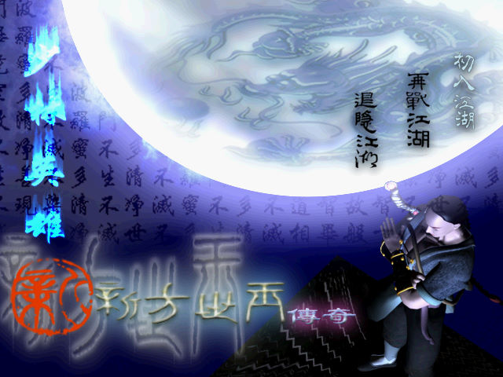
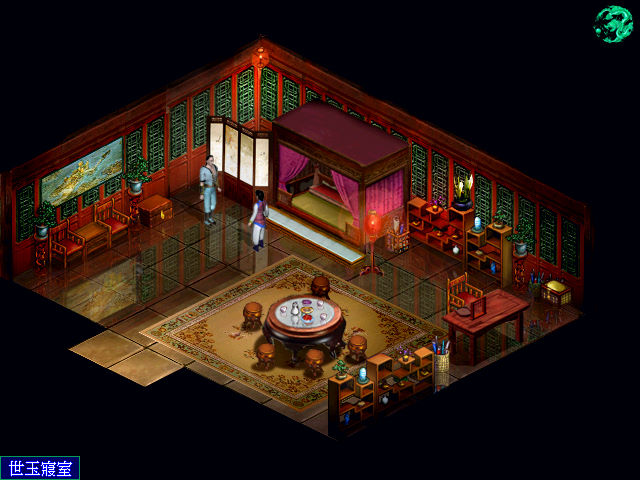

名稱：少林英雄：新方世玉傳奇／少林英雄方世玉 (中文版)
簡介：萬智源2002年出品的角色扮演遊戲，由世纪雷神代理發行，以3D斜角畫面呈現，團隊
回合制方式戰鬥。由於遊戲核心是簡中，因此繁體版會有大量的簡轉繁錯字 [待補]。


保護：光碟，破解碼：
方世玉.exe 或 herofang.exe
E8 39 83 01 00 83 C4 04 85 C0 7F 1C
90 90 90 90 90 -- -- -- -- -- EB --
或
74 1D FE C3
EB -- -- --
備註：執行時，若遊戲文字都顯示成..，可進行下列修改：
方世玉.exe 或 herofang.exe
74 08 6A 02
90 90 -- --
說明：劇情物品不必使用，走到劇情觸發點即會自動使用（不是由交談控制）。